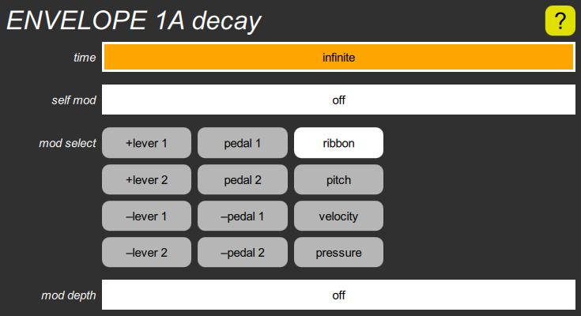

ENVELOPE decay cluster

This contains a time slider to set the time it takes for the envelope to drop toward zero once it has completed its attack phase. Since it slows down as it approaches zero, and theoretically never gets there, this is actually the “time constant”, indicating how long it would have taken to get to zero if it didn’t slow down. The default value is infinity, for a note that lasts as long as the key is held.
This also includes two modulation inputs. The self mod slider determines how much the decay time is affected by its own value. When set to a negative value, it causes the initial decay to be sped up; setting it to a large negative value yields a very short initial spike and a long tail, but the lower the envelope amplitude, the less of a spike.
The mod select buttons and mod depth slider allow the decay time to be modulated by either lever or pedal, the note pitch, the velocity, or the optional pressure sensor. Positive modulation increases the decay time, negative modulation decreases it.